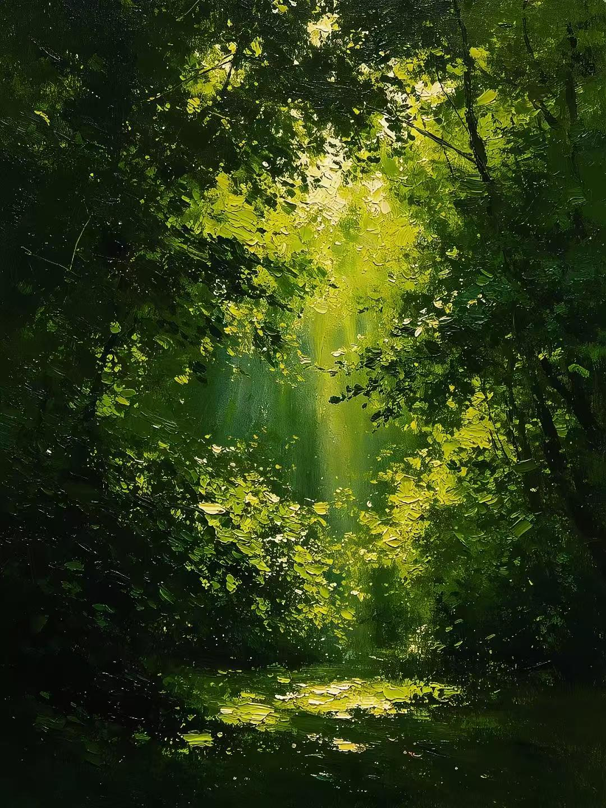
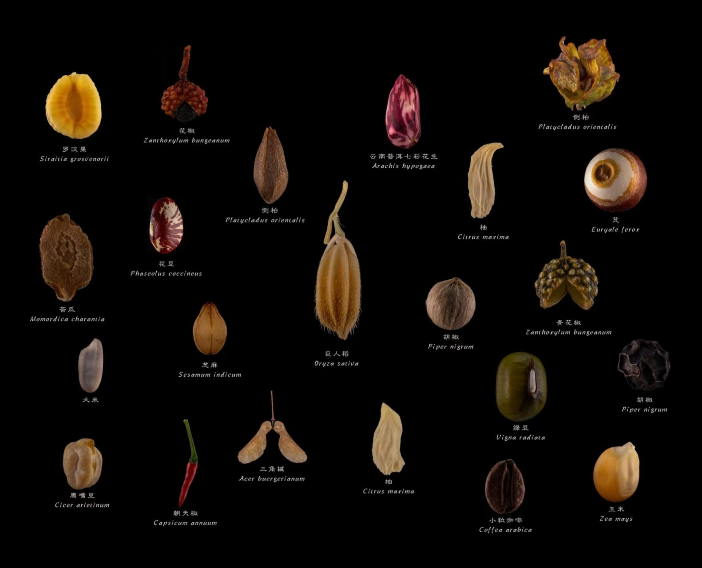
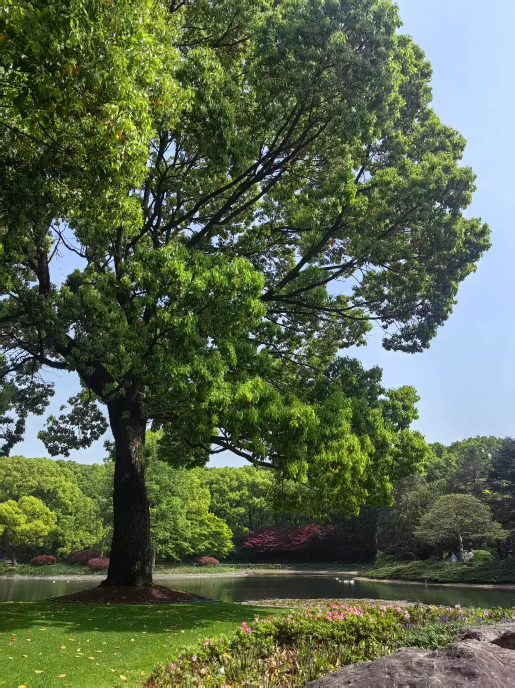
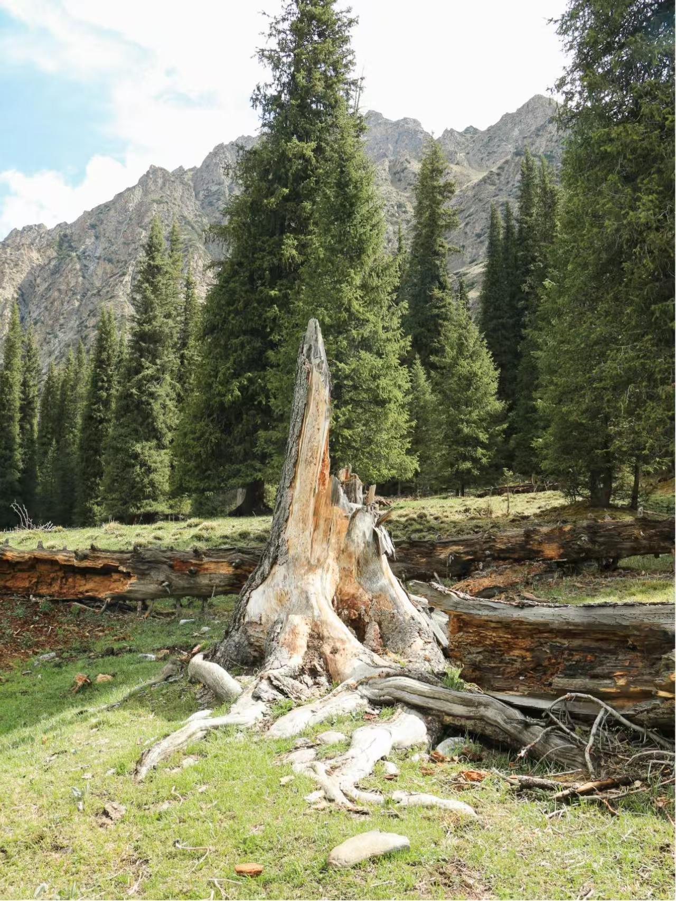
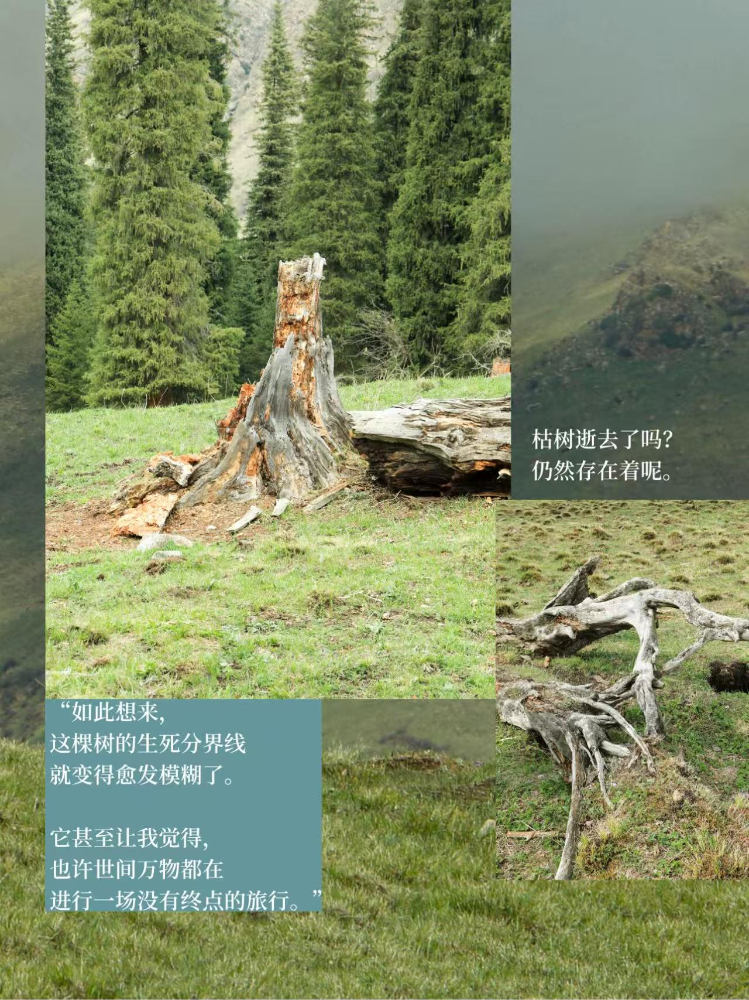

01
立体的家园
高大乔木撑起上层树冠，遮挡强光、调节林间温度。下层灌木、草本与苔藓层层生长，为无数生物提供栖息家园。
走进林间，听见光、风与叶的低语。
About the Forest
森林不只是成片的树木，而是一套精密完整的立体生态系统。
高大乔木撑起上层树冠，遮挡强光、调节林间温度。下层灌木、草本与苔藓层层生长，为无数生物提供栖息家园。
树木庞大的根系牢牢固定土壤，减少水土流失。林间真菌和微生物分解枯枝落叶，将养分归还大地，完成自然循环。
森林吸收二氧化碳、释放氧气，涵养水源、净化空气。鸟类、昆虫、小型野生动物在此觅食繁衍。
万物之间相互依存、彼此制约，维持稳定的生态平衡。 一片落叶、一缕阳光、一汪溪水，共同构筑这片充满生机的自然秘境。
Gallery



A Forest's Life
一颗种子落进泥土，雨与温度唤醒了它。沉默许久，第一道裂缝出现。
嫩芽顶开落叶，第一次触到阳光。它必须比邻居长得更快，才能留在林下。
树冠层成，根系相连。一棵树不再只是一棵树，而是一整片会呼吸的共同体。
风暴或衰老让它倒下。但倒下的树干，是甲虫、真菌与新苗的家，生命并未终结。
腐朽回归泥土，养分重新被吸收。一颗新的种子，在林窗的光里悄悄发芽。




← 鼠标移到圆盘上，自动旋转 →
Visit
“在森林里待上足够久，你会明白：
没有一棵树是独自生长的。”
找一个清晨，关掉手机的声音。
带着好奇和一点点耐心走进去——
森林会把它的秘密，一点一点说给你听。
Green Pledge
森林维系地球生机。拒绝乱砍滥伐，不随意破坏植被，
践行低碳生活，爱护草木生灵。
守护森林，就是守护人类共同的家园。
如有需要请联系我们：18089745419